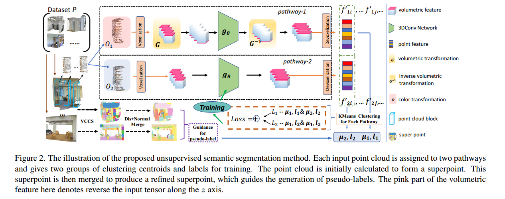
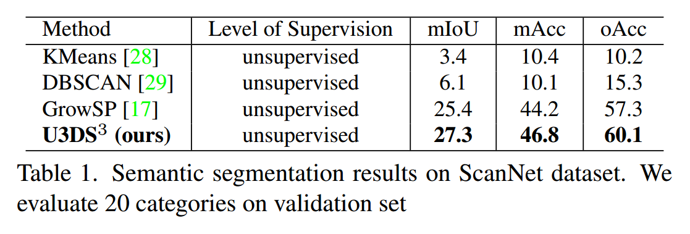
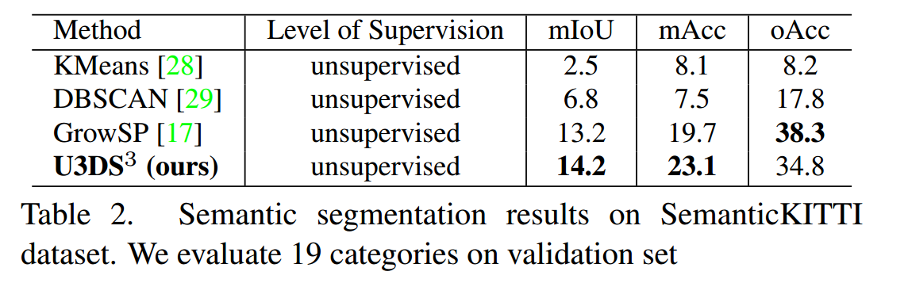
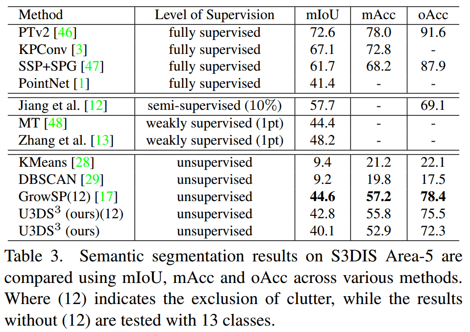

写在前面的话
2月最后一天了，一个多月没发论文笔记，都在狂赶实验，难绷…
0 Abstract
该摘要介绍了当代点云分割方法的局限性，这些方法依赖于丰富注释的数据。本文介绍了U3DS3，作为迈向任何整体3D场景的完全无监督点云分割的一步。利用一种通用的无监督分割方法，用于室内和室外静态3D点云中的对象和背景，无需模型预训练，仅利用点云的固有信息实现全3D场景分割。提出的方法的步骤：根据场景的几何特征生成超点——通过基于空间聚类的方法进行学习——通过伪标签进行迭代训练。在ScanNet和SemanticKITTI数据集上实现了sota。
1 Introduction
由于点云的无序和非结构化性质，对其进行分割并不简单。大多数工作都是完全监督的，依赖于丰富注释的数据。本文工作旨在表征3D特征，不需要任何明确的指导，使其能够从数据的固有结构中学习，且不受错误、偏差或不一致标注的影响，能够在不依赖这些不准确的标注的情况下进行准确的分割。
虽然一些成果已经通过UDA等方式处理了3D点云数据的无监督分割学习，但本文的工作并不依赖于迁移学习。总体策略：（后续会详细解释）应用体素云连接分割（VCCS）来生成初始超点，并根据超点的距离和法线将它们合并——提出一种基线方法，通过在3D点云的特征上应用小批量k均值，生成和更新聚类中心，并计算特征与聚类中心之间的距离，根据超点的指导为每个点分配伪标签——使用伪标签训练网络，为下一次迭代聚类提供新的网络参数——应用一个非参数分类器，仅在特征空间距离上操作——通过利用体积表示的不变性和等变性，对点云输入应用不同的体积变换，并在这些特征表示上应用后续的体素化逆几何变换。
3 U3DS Methodology
这项工作的目标是学习一个语义分割函数gθ，它能够仅使用坐标c和特征f对点集P进行无监督预测每个点的标签。
如下图所示，对于每个输入点区域，首先应用两种不同的颜色变换，然后将它们转换为体积域。对于顶部行的路径1，在将体素化特征馈送到模型之前执行几何变换。在前向传递之后，对输出特征执行相应的逆几何变换，以确保该表示与未经变换的路径2共享相同的属性。随后，从不同的点云块中聚类特征，并产生两组聚类中心和标签，这些标签可以用于进一步的训练和从不同路径组装的损失。

3.1. Superpoint
在点云集合P中的每个点云P1、P2、P3等都使用VCCS方法获取初始超级点。这些超级点可以表示为{SP11, SP21, SP31, ...}，{SP12, SP22, SP32, ...}等，其中SPij表示第j个点云中的第i个超级点。初始超级点可能会因不同的点云而有所变化。接下来，采用一种简单的策略来合并每个场景内的超级点：
- 确定具有最小超级点
SPi1以及其两个最接近的相邻超级点SPk1、SPk2cos[SPi, SPk1]； - 将最小超级点与具有更高余弦相似度的超级点合并；
- 重复执行上述三个步骤，直到超级点达到预定数量。这种简单的方法基于相似的语义对象具有相似的法线的原则。最终，更新后的超级点变为
{SPn11, SPn21, ...}，{SPn12, SPn22, ...}等，确保相同超级点内的点被分配相同的标签。将最终的超级点数量定义为参数γsp，对于所有数据集，经验上的最佳值为γsp = 40。
3.2. Voxelization and Devoxelization（体素化和去体素化）
对输入点云进行几何变换，以产生不同表示，其中采用了基于体素的架构。通过体素化和反体素化，本文提出了一个简单而有效的网络，其中只包含3D卷积层和批量归一化，没有任何额外的组件。
具体而言，对于输入点块中的输入点坐标c和相应的特征f，在将原始点体素化之前对坐标c进行了归一化，以获得尺度不变性。具体地，将坐标c归一化为[0,1]，记为c∗。在这个过程中，点特征（包括坐标）不会改变，而归一化的坐标仅用于将特征转换为正确的体积空间。
将具有归一化坐标c∗={x∗,y∗,z∗}的特征f转移到体素网格{Vm,p,q}时，体素网格的插值特征fi计算为位于网格中的点的特征的平均值。
$$
\begin{gathered}
\boldsymbol{V}{m, p, q}=\frac{1}{K{m, p, q}} \sum_{i=1}^n \boldsymbol{I}\left[\text { floor }\left(x_i^* \times r\right)=m\right. \
\left.\operatorname{floor}\left(y_i^* \times r\right)=p, \text { floor }\left(z_i^* \times r\right)=q\right] \times f_i
\end{gathered}
$$
这个方程描述了将具有归一化坐标的特征$f_i$转移到体素网格$V_{m,p,q}$的过程。具体来说，对于体素网格中的每个体素$(m, p, q)$，通过计算位于体素网格中的点的特征的平均值来计算插值特征。这里的$K_{m,p,q}$表示体素网格$(m, p, q)$中包含的点的数量。
方程中的$\text{floor}$函数将归一化坐标$x_i^, y_i^, z_i^*$乘以$r$后取整，以将归一化坐标映射到体素网格的索引空间。$\boldsymbol{I}$是指示函数，当取整后的归一化坐标与体素网格索引匹配时取值为1，否则为0。通过对满足条件的点的特征进行求和并除以$K_{m,p,q}$，得到体素网格$(m, p, q)$中的插值特征。
3.3. Baseline: Clustering and Iteration
（1）在点云中使用当前的嵌入和k均值聚类来对具有超级点引导的点进行聚类。目标是最小化损失函数：
$$
\min {\boldsymbol{l}, \boldsymbol{\mu}} \sum_i\left|f_i^{\prime}-\mu{l_i^{s p}}\right|^2
$$
这个公式表示了一个优化问题，其目标是最小化所有点的特征与其所属聚类中心之间的欧氏距离的平方和。具体来说：
- $\boldsymbol{l}$表示每个点的聚类标签向量，$l_i^{sp}$表示点$i$的聚类标签。
- $\boldsymbol{\mu}$表示聚类中心向量，$\mu_{l_i^{sp}}$表示点$i$所属聚类的聚类中心。
- $f_i’$表示点$i$的特征。
- $|f_i^{\prime}-\mu_{l_i^{s p}}|^2$表示点$i$的特征与其所属聚类中心之间的欧氏距离的平方。
因此，整个公式的目标是通过选择合适的聚类标签向量$\boldsymbol{l}$和聚类中心向量$\boldsymbol{\mu}$，使得所有点的特征与其所属聚类中心之间的欧氏距离的平方和最小化。
（2）使用类标签作为伪标签，通过交叉熵损失训练分类器，在点云设置中表示为：
$$
\min {\theta, W} \sum_i L{C E}\left(g_W\left(f_i^{\prime}\right), l_i^{s p}, \boldsymbol{\mu}\right)
$$
这个公式表示的是一个损失函数，用于训练一个带参数 $W$ 的分类器 $g_W$，使其预测的结果尽可能接近真实的聚类标签 $l_i^{sp}$。具体来说：
- $\min$ 表示最小化损失函数的目标。
- $\theta$ 和 $W$ 分别表示分类器 $g_W$ 和其它网络参数的集合，我们要优化这些参数以最小化损失函数。
- $\sum_i$ 表示对所有样本点 $i$ 进行求和。
- $L_{CE}$ 表示交叉熵损失函数（Cross-Entropy Loss），用于衡量分类器的预测结果与真实标签之间的差异。
- $g_W\left(f_i^{\prime}\right)$ 表示分类器 $g_W$ 对样本点 $i$ 的特征表示 $f_i^{\prime}$ 的预测结果。
- $l_i^{sp}$ 表示样本点 $i$ 的真实聚类标签。
- $\boldsymbol{\mu}$ 表示聚类中心的集合。
因此，这个损失函数的目标是最小化分类器的预测结果与真实的聚类标签之间的交叉熵损失。
但是，在无监督设置下，训练一个参数分类器是非常具有挑战性的，因为伪标签会不断变化，这会使得训练分类器变得非常困难。因此，选择了一种更简单的方法，即仅根据样本点在特征空间中与聚类中心的余弦距离来标记样本点：
$$
L_{\text {cluster }}\left(f_i^{\prime}, l_i^{s p}, \boldsymbol{\mu}\right)=-\log \left(\frac{e^{-d\left(f_i^{\prime}, \mu_{l_i^{s p}}\right)}}{\sum_t e^{-d\left(f_i^{\prime}, \mu_t\right)}}\right)
$$
这个公式表示的是一个用于聚类的损失函数，通常被称为负对数似然损失函数（Negative Log-Likelihood Loss）。具体来说：
- $\min_\theta$ 表示要优化的目标是最小化损失函数，其中 $\theta$ 表示网络参数的集合，要优化这些参数以最小化损失函数。
- $\sum_i$ 表示对所有样本点 $i$ 进行求和。
- $L_{\text{cluster}}$ 表示聚类损失函数，用于衡量样本点 $i$ 的特征表示 $f_i^{\prime}$ 与聚类中心 $\mu_{l_i^{sp}}^{sp}$ 之间的距离。
- $-\log\left(\frac{e^{-d\left(f_i^{\prime}, \mu_{l_i^{sp}}^{sp}\right)}}{\sum_t e^{-d\left(f_i^{\prime}, \mu_t\right)}}\right)$ 是计算每个样本点的损失值。其中，$d$ 表示特征之间的距离度量，通常使用欧式距离或余弦相似度等。这个式子的含义是将样本点 $i$ 的特征表示 $f_i^{\prime}$ 与所有聚类中心 $\mu_t$ 之间的距离计算为一个概率分布，然后取该分布下样本点 $i$ 对应的聚类中心的概率的负对数作为损失值。
因此，这个损失函数的目标是最小化每个样本点的特征表示与其所属聚类中心之间的距离的负对数似然。
3.4. Volumetric Transformations
这段描述涉及到在无监督环境下提高鲁棒性的方法，通过利用点云的体积表示的不变性和等变性来实现。
- 不变性（Invariance）：指的是在应用不同的变换（如颜色抖动）之后，标签不应该发生变化。换句话说，即使对输入数据进行了一些变换，但标签仍然应该保持不变。
- 等变性（Equivariance）：指的是在体积领域中，当我们对点云应用几何变换时，相应的3D卷积特征应该以类似的方式进行变换，并且相应的标签也应该根据这个变换进行调整。换句话说，经过几何变换后，点云的体积表示和标签应该保持相对关系。
为了实现这种不变性和等变性，作者提出了两个处理不同表示的流程，分别称为路径1和路径2。为了为单个输入块生成两种不同的表示，首先在提取体积特征之前对其进行几何变换，然后对最终的体素特征进行相应的逆变换。具体来说，G和G−1分别表示体素特征的几何变换和逆变换，O表示颜色变换。对于点c和其特征f，对原始特征f应用不同的颜色变换：
$$
\boldsymbol{f}_1=\boldsymbol{O}_1(\boldsymbol{f}), \boldsymbol{f}_2=\boldsymbol{O}_2(\boldsymbol{f})
$$
接下来，将这两个特征转换为体素网格：
$$
\boldsymbol{v}_1=\boldsymbol{Z}\left(\boldsymbol{f}_1, \boldsymbol{c}_1^\right), \boldsymbol{v}_2=\boldsymbol{Z}\left(\boldsymbol{f}_2, \boldsymbol{c}_2^\right)
$$
这个公式描述了如何将原始的特征表示转换为体素化的特征表示。具体来说，对于第一个路径，使用体素化操作Z将特征表示f1和规范化的坐标c1转换为体素化的特征表示v1。对于第二个路径，同样地，使用体素化操作Z将特征表示f2和规范化的坐标c2转换为体素化的特征表示v2。
在这之后，体素化特征变换被应用到体积领域中：只有路径1的特征被变换，而另一个保持不变。几何变换作用于体素化特征v，相应的逆几何变换作用于输出的体素特征v_out：
$$
\boldsymbol{v}1^{\text {out }}=\boldsymbol{G}^{-1}\left{g\theta\left[\boldsymbol{G}\left(\boldsymbol{v}_1\right)\right]\right}, \boldsymbol{v}2^{\text {out }}=g\theta\left(\boldsymbol{v}_2\right)
$$
这个公式描述了两个路径的处理过程。第一个路径中，先对体素化特征v1进行几何变换G，然后通过参数为θ的卷积网络gθ处理，最后再应用逆几何变换G^(-1)。第二个路径中，直接通过参数为θ的卷积网络gθ处理体素化特征v2。
随后，进行去体素化以获得聚类特征：
$$
\boldsymbol{f}_1^{\prime}=\boldsymbol{Z}^{-1}\left(\boldsymbol{v}_1^{\text {out }}, \boldsymbol{c}_1^\right), \boldsymbol{f}_2^{\prime}=\boldsymbol{Z}^{-1}\left(\boldsymbol{v}_2^{\text {out }}, \boldsymbol{c}_2^\right)
$$
这个公式描述了如何将输出的体素化特征转换回原始的特征表示。具体来说，对于第一个路径，使用逆体素化操作Z(-1)将体素化的输出特征v1out以及规范化的坐标c1转换回原始的特征表示f1’。对于第二个路径，同样地，使用逆体素化操作Z(-1)将体素化的输出特征v2out以及规范化的坐标c2转换回原始的特征表示f2’。
3.5. Losses and Labelling Scheme
这段描述了在给定输入点云c和特征f的情况下，根据在第3.3节介绍的颜色和几何变换，可以产生两种不同的特征表示f’1和f’2。利用这两种特征表示，分别对它们进行聚类，得到两组中心和伪标签：
$$
\begin{aligned}
& \boldsymbol{l}^{(\mathbf{1})}, \boldsymbol{\mu}^{(\mathbf{1})}=\arg \min {\boldsymbol{l}, \boldsymbol{\mu}} \sum_i\left|f{1 i}^{\prime}-\mu_{l_i^{s p}}\right|^2 \
& \boldsymbol{l}^{(\mathbf{2})}, \boldsymbol{\mu}^{(\mathbf{2})}=\arg \min {\boldsymbol{l}, \boldsymbol{\mu}} \sum_i\left|f{2 i}^{\prime}-\mu_{l_i^{s p}}\right|^2
\end{aligned}
$$
这个公式表示了对两种不同特征表示进行聚类的过程。其中，l^(1) 和 µ^(1) 分别表示第一种特征表示的聚类标签和聚类中心，它们是通过最小化每个数据点f’1i与其对应聚类中心的欧氏距离的平方和来确定的。l2类似。
设置两个损失函数。首先，特征表示应该与同一路径产生的伪标签匹配：
$$
\begin{array}{r}
L_1=\sum_i L_{\text {cluster }}\left(f_{1 i}^{\prime}, l_i^{s p(1)}, \boldsymbol{\mu}^{(\mathbf{1})}\right)+ \
\sum_i L_{\text {cluster }}\left(f_{2 i}^{\prime}, l_i^{s p(2)}, \boldsymbol{\mu}^{(\mathbf{2})}\right)
\end{array}
$$
类似地，特征表示应该同时匹配不同路径产生的伪标签：
$$
\begin{array}{r}
L_2=\sum_i L_{\text {cluster }}\left(f_{1 i}^{\prime}, l_i^{s p(2)}, \boldsymbol{\mu}^{(2)}\right)+ \
\sum_i L_{\text {cluster }}\left(f_{2 i}^{\prime}, l_i^{s p(1)}, \boldsymbol{\mu}^{(\mathbf{1})}\right)
\end{array}
$$
最终的训练目标是他们的总和：
$$
L_{\text {final }}=L_1+L_2
$$
这个损失函数鼓励来自一个路径的特征与另一个路径生成的标签保持一致，这样鼓励网络以与不同路径的特征表示相似的方式进行标记。
4. Experiments
实现细节：采用了一个简单但有效的框架，其中包含8层3D卷积，每一层都使用了3D批归一化和Leaky ReLU激活函数。输入点云包含12维特征，即在归一化块坐标系中的点坐标（x、y、z）、颜色信息（R、G、B）、每个点的法线以及原始场景坐标系中的归一化原始坐标。注，SemanticKITTI数据集中没有提供颜色信息。
训练细节：使用批量大小为4，每个批次的数据包含4096个点，适用于所有数据集。选择的优化器是随机梯度下降（SGD），学习率为1e-4，权重衰减为1e-5。训练网络共10个epochs。在体积域中的几何变换中，分别沿给定的x、y和z轴反转张量的顺序。颜色变换包括随机对比度和随机亮度调整。模型的输出特征维度和聚类特征维度均设置为128。体素网格的分辨率设置为32。此外，在GPU上使用FAISS库通过采用mini-batch k-means方法计算聚类中心。
评估过程：为了与其他方法进行评估和比较，选择了两种经典的无监督聚类方法，k-means和DBSCAN，以及唯一的无监督语义分割方法GrowSP作为基准。使用三个指标进行评估：总体精度（oAcc）、平均精度（mAcc）和平均交并比（mIoU），这些指标适用于所有数据集。所有实验都在单个NVIDIA RTX 2080Ti GPU上进行。
4.1. Datasets
在两个室内和一个室外基准数据集上评估了U3DS3：S3DIS，ScanNet和SemanticKITTI。
S3DIS是一个大规模室内场景数据集，包含六个区域的271个点云房间。点云场景中每个点的注释属于13个语义类别。在区域1、2、3、4、6中训练模型，并根据在区域5中进行测试。为了与GrowSP进行公平比较，排除了杂乱物，并使用12个类别进行测试，但也使用13个类别进行测试，以与现有的监督、弱监督和半监督方法进行比较。ScanNet-v2是一个RGB-D真实室内数据集。它包含1201个用于训练的场景，312个用于验证，和100个用于在线测试。对于场景语义分割，它具有40个类别和一个未标记的类别用于训练，以及20个类别用于测试。在验证集上与现有的聚类和无监督方法进行比较。SemanticKITTI是一个基于KITTI Vision Odometry Benchmark的大规模室外数据集。对于语义分割任务，它提供了19个类别的点级注释的22个序列。每个序列包含由汽车激光雷达收集的一系列场景扫描，其中序列11-21用于在线测试，08是验证集，其余是训练集。- 数据准备：对于所有数据集，选择每个场景的超级点数量为
γsp = 40。首先，对S3DIS和ScanNet进行均匀降采样，子网格大小为0.03，然后按照PointCNN的方法将点云采样成块，以确保批处理中的每个数据样本具有相同数量的点。对于S3DIS和ScanNet，块大小为xy平面上的1.5×1.5，每个块包含4096个点。对于SemanticKITTI，将每个块的大小设置为xy平面上的5×5，包含4096个点。对于每个点云，利用VCCS方法推导出初始的超级点。然后，将这些超级点合并以增强分割效果，具体细节见3.1节。此外，由于室外SemanticKITTI数据集中道路的特点和优势，应用RANSAC方法拟合一个平面作为道路，以改善超级点的生成。
4.2. Results and Comparison on Benchmarks
在室内S3DIS、ScanNet和室外SemanticKITTI基准测试中，对U3DS3方法进行了全面评估。下表分别展示了在ScanNet、SemanticKITTI和S3DIS数据集上的语义分割结果。毫不奇怪，全监督方法提供了最佳性能。从表3可以看出，我们的方法明显优于现有的聚类方法，在S3DIS数据集上实现了75.5%的整体准确率和42.8的mIoU。此外，本文的方法甚至接近全监督方法和一些最新的弱监督方法的性能，这对无监督语义3D场景分割是一大进步。
此外，在ScanNet和SemanticKITTI数据集上也优于GrowSP方法。具体而言，表1显示，本文的方法在结果上比它们分别提高了+1.9的mIoU和+2.6的mAcc。此外，表2显示，尽管oAcc略低，但本文的方法比GrowSP高出1的mIoU和3.4的mAcc。图3展示了在S3DIS上的定性比较，进一步证明了本文方法的优越性。



4.3. Analysis
U3DS3方法在室内和室外数据集上表现出与现有基线相比具有潜力的性能水平。与GrowSP方法相比，在ScanNet和SemanticKITTI数据集上取得了更优异的结果。随着场景复杂性的增加，GrowSP的超级点质量往往会下降。相反，本文的方法不仅包含了预分割，还采用了双通道训练算法，利用了不变性和等变性的概念。然而，在实际场景中可能会出现轻微的性能下降。为了解决这个问题，实施了三种策略：
(i) 当集合中的另一个簇达到零实体时，分割最大的簇（在聚类过程中，如果某个聚类簇中的点数降至零，即没有任何点被分配到该簇中，而另一个簇中的点数不为零，那么就会将这个非零簇中的点进行分割，以避免聚类结果中出现没有任何点的簇。具体来说，这意味着将非零簇中的点按照某种标准重新划分到其他簇中，从而确保每个簇至少包含一个点）；
(ii) 在更新过程中应用轻微的质心扰动（在聚类过程中，在每次更新聚类中心（质心）的时候，会对质心进行轻微的变动或扰动。这种扰动可以是随机的小幅度改变质心的位置，目的是为了使聚类过程更加稳定，避免质心陷入局部最优解，从而增加聚类结果的鲁棒性和多样性）；
(iii) 在每个时期使用每类伪标签比例进行损失平衡的重新加权（这句话指的是在训练模型的每个epoch中，根据每个类别的伪标签数量比例来重新加权损失函数，以实现损失函数在不同类别之间的平衡。在训练过程中，可能会出现某些类别的样本数量远远多于其他类别，导致损失函数过度关注样本数量多的类别而忽略数量少的类别，从而影响模型的性能。通过重新加权损失函数，可以使不同类别的损失对模型训练的影响更加平衡，从而提高模型在所有类别上的表现）。
此外，我们的双通道方法加速了训练过程中的收敛时间。例如，当只使用一个通道进行训练时，需要大约8个时期才能达到收敛，而双通道方法则只需要2-3个时期即可实现收敛。
5. Conclusion and Discussion
本文提出一个新颖的通用无监督语义分割方法，适用于室内和室外具有对象和背景的3D场景。该方法利用了一种简单但有效的框架，通过聚类和迭代生成，在保持体积表示的不变性和等变性的同时利用了超级点的辅助。实验证明，在S3DIS、ScanNet和SemanticKITTI数据集上，表现出了令人满意的性能，证明了方法优于所有现有的基线方法。这项工作旨在为3D无监督学习提供更多见解。未来的工作将探索改进的点采样策略，并将其扩展到基于点或图的表示，从而使其受益于与无监督学习、度量学习和3D表示学习相关的其他领域。
名词解释及问题
超级点
超级点是指通过一种聚类算法，从原始点云中识别出来的一组紧密相连的点。超级点可以看作是点云中的局部区域，其中的点具有相似的特征或属性。超级点的识别可以帮助简化点云数据，并且有助于后续的特征提取和分析。
VCCS方法是指Voxel Cloud Connectivity Segmentation，是一种用于点云分割的聚类算法。该算法首先将点云数据转换为体素表示，然后通过计算相邻体素之间的连通性来识别超级点。VCCS方法在点云处理领域被广泛应用，可以有效地提取点云中的局部结构，并且具有良好的可扩展性和鲁棒性。
聚类相关概念
聚类是一种无监督学习方法，其目标是将数据集中的样本划分为具有相似特征的若干个组，这些组被称为簇(cluster)。聚类算法根据数据点之间的相似性将它们分组在一起，而不需要事先知道每个样本的真实类别。
- 聚类标签是指每个样本被分配到的簇的标识或编号。在聚类过程中，每个样本都会被分配一个聚类标签，表示它属于哪个簇。
- 聚类中心是每个簇的代表性点或中心点，通常是簇中所有样本点的平均值或质心。聚类算法的目标之一就是找到合适的聚类中心，使得簇中的样本与该中心的距离尽可能小。聚类中心的选择通常是在算法迭代过程中动态更新的。
度量学习
度量学习是一种机器学习方法，其目标是学习一个适当的度量（或距离）来度量数据之间的相似性或差异性。在度量学习中，通常会定义一个度量空间，其中每个数据样本都表示为一个向量，并学习一种距离函数或相似度函数，以便在该空间中有效地表示数据之间的关系。度量学习的主要目标是在学习过程中优化数据样本的表示，使得相似的样本之间的距离较小，而不相似的样本之间的距离较大。度量学习在许多领域都有广泛的应用，包括图像识别、文本分类、推荐系统等。
3D表示学习
3D表示学习是指在三维空间中学习有效地表示物体或场景的方法。与传统的机器学习任务不同，例如分类或回归，3D表示学习着重于学习数据的高维、结构化表示，以便能够捕捉物体或场景的几何形状、空间关系和语义信息等方面的特征。
在3D表示学习中，常见的方法包括基于深度学习的方法和基于图形模型的方法。基于深度学习的方法通常利用卷积神经网络（CNN）或其变体来处理3D数据，例如点云、网格或体素。这些方法可以学习在3D空间中提取和表示特征的模型，从而实现诸如物体分类、物体检测、语义分割等任务。另一方面，基于图形模型的方法则更多地利用图论和图像处理的技术来表示和处理3D数据，例如使用图卷积网络（GCN）来学习3D场景中物体之间的关系。
3D表示学习在计算机视觉、图形学、机器人学等领域都有着广泛的应用，例如在三维物体识别、场景理解、虚拟现实和增强现实等方面。